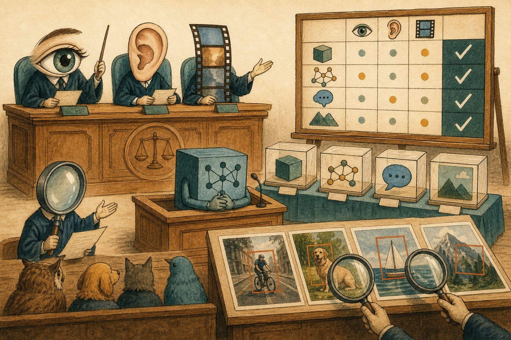

Multimodal evals
Your VLM aces demos — then misreads invoices. Learn the benchmark zoo (MMMU, MathVista, ChartQA), hallucination probes (POPE), grounding metrics, and how to build evals that predict production.

Figure 61.1 — Multimodal evals put every sense on trial: see, read, reason, ground — with exhibits.
1. The benchmark zoo (what each proves)
| Benchmark | Tests | Watch out |
|---|---|---|
| MMMU / MMMU-Pro | College-level multimodal reasoning (30 subjects) | Contamination-prone; vision-optional for some items |
| MathVista / ChartQA | Math + charts in images | OCR shortcuts can inflate scores |
| DocVQA / InfoVQA | Document understanding | Resolution-sensitive; test your scan quality |
| POPE / AMBER | Object hallucination (yes/no + open) | Yes-bias gaming; pair with open-ended |
| RefCOCO / GQA | Grounding + compositional VQA | Metric–UX gap; add human spot checks |
2. The eval stack (run all four)
- Grounding metric: IoU ≥ 0.5 between predicted and true boxes; report per object size (small objects fail first).
- Hallucination rate: % answers mentioning absent objects — slice by question type (counting and negation break most).
- Your-data golden set: 200+ real samples (your scans, your lighting, your edge cases) with expected outputs — the only eval that predicts YOUR production.
3. Human evals that aren’t theatre
- Rubrics over vibes: 3–5 explicit criteria (correctness, grounding, completeness) with examples per grade. Calibrate raters on 20 samples first.
- Blind + randomised: raters never know which model; order shuffled; measure inter-rater agreement (κ) — low κ means the rubric is broken, not the models.
- Slice everything: report by document type, language, image quality. Aggregates hide the invoice-table slice that’s failing.
Eval pitfalls
Leaderboard-chasing on contaminated benchmarks · vision-optional items inflating “multimodal” scores · yes-bias on POPE-style probes · testing on clean scans, shipping on crumpled photos · no human agreement metrics.
Short notes
Zoo: MMMU (reasoning), MathVista/ChartQA (figures), DocVQA (docs), POPE/AMBER (hallucination), RefCOCO (grounding). Run L1–L4 with weight on your-data golden + human evals. IoU≥0.5 for boxes; hallucination rate sliced; blind rubrics with κ agreement; slice by quality/type.
Point notes
- Public = comparable, not predictive.
- Probe hallucination + grounding.
- Golden set = your reality.
- Rubrics + blind + κ.
- Slice by size/quality/type.
MCQs
5 questions1. POPE-style probes primarily measure:
2. Standard grounding correctness threshold:
3. “Vision-optional” benchmark items are dangerous because:
4. Low inter-rater agreement (κ) on human evals means:
5. The eval most predictive of YOUR production is:
Practice questions
P1. VLM scores 78% MMMU but fails your warehouse labels. Build the bridge eval.
Collect 300 real label photos (your lighting/angles/damage) with expected reads. Slice: clean vs dirty vs torn vs low-light. Add grounding (IoU on label boxes) + hallucination probes (absent SKUs). Gate releases on THIS set; keep MMMU only for regression comparability. Report per-slice, fix worst slice first (likely crop-zoom pipeline).
P2. Design a 3-criterion rubric for invoice-table extraction + calibration plan.
Criteria: (1) Cell accuracy (exact per-cell, 0/1), (2) Structure (rows/cols preserved, merged cells handled), (3) Grounding (each value traceable to a region). Grades with 2 examples each. Calibrate: 3 raters × 20 invoices, discuss disagreements, refine rubric, require κ ≥ 0.7 before launch. Blind model identity, shuffle order.
P3. Prove a benchmark gain is real vision progress, not contamination/OCR luck.
Controls: (1) blank-image ablation — gain should vanish if vision matters; (2) novel held-out set (post-cutoff, private) showing the same delta; (3) perturbation tests (crop/paraphrase stability); (4) error analysis showing new capabilities, not memorised answers. No controls = press release, not progress.